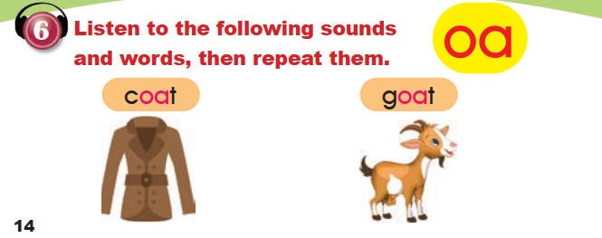

✦ ENGLISH FULL CURRICULUM
← Return to Grade 3 lessonsGRADE 3 · UNIT 1 · LESSON 4
Vocabulary and Explanation
My Five Senses · words and phrases actually used in Lesson 4. Fixed reference tables keep the two books’ page references visible.
Word-level support. English entries come from these six source pages. Arabic meanings are editorial translations, not printed textbook content. English stays LTR; only the Arabic meaning cells are RTL.
1. Body parts
| English | Arabic meaning | Source |
|---|---|---|
| eye | عين | PB p. 13; WB pp. 12, 14 |
| nose | أنف | PB p. 13; WB pp. 12, 14 |
| ear | أذن | PB p. 13; WB p. 12 |
| mouth | فم | PB p. 13; WB pp. 12–14 |
| hand | يد | PB p. 13; WB pp. 12, 14 |
| fingers · ten fingers | أصابع · عشرة أصابع | PB p. 14 |
2. The five senses
| English | Arabic meaning | Source |
|---|---|---|
| see | يرى | PB pp. 12–14; WB pp. 12–14 |
| hear | يسمع | PB pp. 12–14; WB pp. 12–13 |
| smell | يشمّ | PB pp. 12–14; WB pp. 12–14 |
| taste | يتذوّق | PB pp. 12–14; WB pp. 12–14 |
| touch | يلمس | PB pp. 12–14; WB pp. 12–14 |
| sense | حاسّة | Lesson title, PB p. 12 |
3. Numbers ten to fifty
| English | Arabic meaning | Source |
|---|---|---|
| ten · 10 | عشرة | PB p. 13 |
| twenty · 20 | عشرون | PB p. 13 |
| thirty · 30 | ثلاثون | PB p. 13 |
| forty · 40 | أربعون | PB p. 13 |
| fifty · 50 | خمسون | PB p. 13; WB p. 14 |
| thirty-one … thirty-nine | من واحد وثلاثين إلى تسعة وثلاثين | WB p. 14 |
| forty-one … forty-nine | من واحد وأربعين إلى تسعة وأربعين | WB p. 14 |
| 21 · 24 · 28 · 29 | واحد وعشرون وهكذا | WB p. 13 |
| 32 · 35 · 38 · 39 | اثنان وثلاثون وهكذا | WB p. 13 |
| 40 · 45 · 42 · 48 | أربعون وهكذا | WB p. 13 |
4. Describing things and people
| English | Arabic meaning | Source |
|---|---|---|
| nice | لطيف | PB p. 12; WB p. 13 |
| delicious | لذيذ | PB p. 12; WB p. 13 |
| colourful | ملوّن | PB p. 12 |
| beautiful | جميل | PB p. 12 |
| lovely | جميل / محبوب | PB p. 12 |
| small | صغير | PB p. 12 |
| soft | ناعم | PB p. 12 |
5. Things in the lesson
| English | Arabic meaning | Source |
|---|---|---|
| cake · cakes | كعكة · كعكات | PB p. 12; WB p. 13 |
| chocolate | شوكولاتة | PB p. 12 |
| butterfly | فراشة | PB p. 12 |
| bird · birds | طائر · طيور | PB pp. 12, 14 |
| tree · trees | شجرة · أشجار | PB pp. 12–14; WB p. 13 |
| cat · cats | قطة · قطط | PB p. 12; WB p. 13 |
| flower · flowers | زهرة · أزهار | PB p. 13; WB pp. 13–14 |
| apple | تفاحة | PB p. 13; WB p. 14 |
| telephone | هاتف | PB p. 13 |
| rose | وردة | WB p. 14 |
| orange | برتقالة | WB p. 14 |
| rabbit | أرنب | WB p. 14 |
| car | سيارة | WB p. 14 |
| coat | معطف | PB p. 14 |
| goat | عنزة | PB p. 14 |
| moon | قمر | WB p. 13 |
| sky | سماء | WB p. 13 |
6. Language focus
Saying what you can do with a body part
Use I can + the sense verb + with my + the body part. These lines are quoted from the lesson:
I can see with my eyes.
I can hear with my ears.
I can touch with my hands.
Asking and answering with can
Can you …? asks about an ability and is answered Yes, I can. or No, I can’t. Can I …? asks for permission; the polite answer in the lesson is Yes, you can.
Can you hear the birds?
Yes, I can.
But I can't see them.
Can I touch it?
Yes, you can.
The letters oa
The lesson highlights oa in coat and goat. The original recording was not supplied, so the pronunciation note here is editorial and describes the printed letters only.
